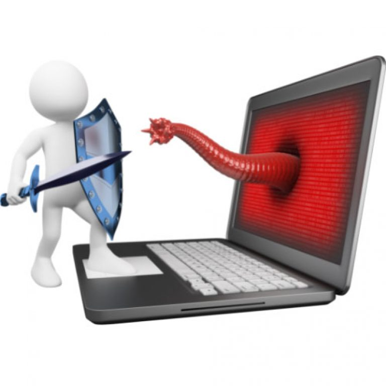

informatica come scienze
L'informatica è una scienza che si occupa di come elaboriamo, gestiamo e condividiamo le informazioni grazie a computer e altre tecnologie. È iniziata come una parte delle scienze matematiche e naturali, per capire i principi dietro ai sistemi informatici e migliorare i modi in cui trattiamo e gestiamo i dati in modo efficace e sicuro. Questa disciplina si divide in vari settori, come la teoria dell'informazione, la programmazione, la progettazione di algoritmi, l'intelligenza artificiale, la sicurezza informatica e tutte le applicazioni tecnologiche in tanti campi (medicina, economia, scienze sociali, e così via). I suoi utilizzi spaziano dalla gestione di grandi quantità di dati (Big Data) all'ottimizzazione dei processi industriali, dalla robotica all'automazione, fino a creare software per affrontare problemi complessi. L'informatica è uno dei principali motori del progresso tecnologico e scientifico nel mondo di oggi, avendo un impatto sempre più forte sulla nostra vita quotidiana, sull'economia e sullo sviluppo delle società moderne.
informatica come storia
La storia dell'informatica è affascinante e affonda le radici in strumenti antichi come l’abaco. Ma se parliamo della sua evoluzione moderna, dobbiamo risalire al XIX secolo, quando Charles Babbage ha progettato la sua macchina analitica, un vero predecessore dei computer che conosciamo oggi. Ada Lovelace, che capì il potenziale di questa macchina, scrisse il primo algoritmo mai destinato a essere eseguito da un computer. Poi, nel XX secolo, Alan Turing ha introdotto il concetto di macchina universale, che rimane alla base della computazione. Nel 1941, Konrad Zuse costruì la Z3, il primo computer elettromeccanico, e nel 1945 nacque l'ENIAC, tra i primi computer elettronici. L'arrivo del transistor nel 1947 permise di rendere i computer più compatti, dando vita al computer a programma memorizzato con il Manchester Mark I. Negli anni '70 e '80, i computer personali come l’Altair 8800 e l’Apple II hanno cambiato tutto. Poi, negli anni '90, il World Wide Web di Tim Berners-Lee ha rivoluzionato il modo di comunicare e accedere alle informazioni. Nei primi anni 2000, abbiamo visto esplodere l'intelligenza artificiale, il cloud computing e l'analisi dei Big Data, tutti fattori che hanno trasformato il panorama tecnologico. Oggi, l'informatica continua a evolversi con innovazioni come il quantum computing e la blockchain, toccando ogni aspetto della nostra vita e favorendo nuove tecnologie emergenti.
aspetti positivi e negativi
| positivo | negativo |
| Accesso alle informazioni: Con l'avvento di Internet e del World Wide Web, l'accesso a informazioni, conoscenze e risorse educative è diventato immediato e globale, abbattendo barriere geografiche e culturali | Dipendenza dalla tecnologia: L'uso eccessivo della tecnologia può portare a una dipendenza, con conseguenti problemi di salute mentale, isolamento sociale e difficoltà nel mantenere un equilibrio tra vita personale e lavoro |
| Innovazione in medicina: L'informatica ha rivoluzionato la medicina con l'introduzione di tecnologie come la telemedicina, l'intelligenza artificiale per diagnosi più precise, la gestione elettronica dei dati sanitari e la ricerca scientifica avanzata | Disuguaglianza digitale: Non tutte le persone, soprattutto in aree meno sviluppate, hanno accesso alla stessa tecnologia e connessione internet. Questo crea un divario tra chi può sfruttare le opportunità offerte dall'informatica e chi ne è escluso |
| Comunicazione globale: I computer, i social media e le piattaforme di messaggistica hanno reso possibile la comunicazione in tempo reale tra persone in tutto il mondo, facilitando sia la collaborazione internazionale che il contatto quotidiano tra individui. | Sovraccarico di informazioni: La quantità massiva di dati e informazioni disponibili online può portare a un sovraccarico cognitivo, difficoltà nel discernere tra contenuti affidabili e non, e confusione riguardo a ciò che è vero o falso |

comportamento in rete
Il comportamento online, o netiquette, comprende le regole e le buone pratiche per comunicare e interagire in rete in modo rispettoso e responsabile. Con l’aumento dell’uso di Internet e dei social media, è davvero importante comportarsi nel modo giusto, per contribuire a un ambiente digitale sano e sicuro. Ecco alcune cose fondamentali da tenere a mente: 1. Rispetto per gli altri Online, proprio come nella vita di tutti i giorni, è essenziale trattare gli altri con rispetto. Ciò implica evitare l inguaggio offensivo, insulti, bullismo (cyberbullismo) e discriminazione. Ogni persona merita lo stesso rispetto che ci si aspetterebbe nella vita reale. 2. Protezione della privacy È importante rispettare la privacy degli altri e prestare attenzione a non rivelare informazioni personali senza il consenso di chi le riguarda. Condividere dettagli sensibili, come indirizzi o numeri di telefono, può essere rischioso e mettere a repentaglio la sicurezza di tutti. 3. Condivisione responsabile Quando si pubblicano contenuti (foto, video, articoli, ecc.), ricordati sempre di controllare che siano appropriati e non violino diritti di proprietà intellettuale, come il copyright. È buona norma citare le fonti se ripubblichi informazioni o usi contenuti di altri. 4. Evita lo spam Non inviare messaggi indesiderati o pubblicità in modo invasivo, soprattutto in gruppi o piattaforme pubbliche. Fare spam può infastidire gli utenti e violare le regole delle piattaforme. 5. Comunicazione chiara e cortese È importante essere chiari e concisi nei messaggi, evitando abbreviazioni eccessive, maiuscole (che possono sembrare come “urlare”) e emoticon inappropriate. La cortesia e un tono positivo sono sempre apprezzati, anche quando si hanno opinioni diverse. 6. Evita la diffusione di fake news Internet è pieno di informazioni, ma non tutte sono verificate. Prima di condividere notizie, è fondamentale controllare le fonti. Per diffondere fake news o contenuti ingannevoli può davvero danneggiare la reputazione di qualcuno e creare confusione. 7. Cyberbullismo e comportamenti dannosi Il cyberbullismo è un problema serio che può avere conseguenze gravi. È fondamentale denunciare comportamenti offensivi e di molestie online, sostenere le vittime e contribuire a creare un ambiente sicuro per tutti. 8. Rispetto delle regole delle piattaforme Ogni piattaforma online (social media, forum, e-commerce, ecc.) ha le sue regole. È importante leggerle e seguirle per evitare problemi e multe, come la sospensione dell’account. 9. Sicurezza informatica Adotta comportamenti sicuri in rete, come usare password forti, stare attento a link sospetti e non scaricare allegati o software da fonti non verificate. Proteggere i propri dispositivi da virus e malware è essenziale per la tua sicurezza e quella degli altri. 10. Consapevolezza delle conseguenze Ricorda che tutto ciò che pubblichi online può essere visto da molti e potrebbe rimanere reperibile a lungo. Le parole e le azioni online hanno delle conseguenze, sia positive che negative. In conclusione: Il comportamento in rete è cruciale per mantenere un ambiente online positivo, sicuro e rispettoso. Adottare una buona netiquette significa promuovere comunicazioni sane, proteggere la privacy, prevenire conflitti e diffondere informazioni verificate. È importante essere sempre consapevoli dell’impatto delle proprie azioni online e rispettare gli altri, proprio come faremmo nella vita di tutti i giorni.vai alla pagina indice